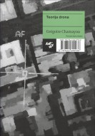

|  |
Teorija drona
Grégoire ChamayouZaložba: Spletni partner mehka vezava, 19,5 x 13,5 cm, 290 g, 241 strani ISBN 978-961-260-093-8 Cena: 22,00€ |
strokovna monografija Kategorija: družbene vede > politika filozofija računalništvo in tehnika |
Založnik o knjigiChamayou izhaja iz metodološkega vodila, da razvoj tehnologije ne prinaša samo razširitve nabora sredstev za dane smotre, temveč spreminja način njihove uporabe in preko tega določa same smotre. Vsaka tehnika nosi s seboj neko filozofijo, ki nazadnje vpliva na vsakdanje življenje uporabnikov. V tej luči Chamayou analizira pojav dronov, predvsem oboroženih daljinsko vodenih letal, katerih uporaba je v zahodnih vojskah vedno večja. Načeloma oborožen dron zgolj ponuja možnost hipne in razmeroma poceni uporabe sile povsod po svetu brez nevarnosti za napadalca. Vendar se s tem zgodi še marsikaj drugega: odpade načelo osebne vpletenosti, ki je od nekdaj zaznamovala vojskovanje; z zmanjšanjem tveganja se poveča verjetnost uporabe sile; spremeni se pojem sovražnika, temeljni pojem političnega; ogroženost potencialnih tarč postane permanentna; izbriše se meja, ki ločuje vojno in mir. Morda ima zadnji poudarek še najgloblje posledice, kajti kot opozarja Chamayou, vojaška uporaba dronov ne sledi niti logiki miru, v tem primeru bi pač imeli opraviti z izvensodnimi poboji, niti logiki vojne, ki ima ravno tako svoja pravila, od vojne napovedi preko nadzora ozemlja do razlikovanja med vojaki in civilisti. S tem pa uporaba trotov otipljivo vpliva na našo lastno demokratično vsakdanjost in nas postavlja pred vrsto pravnih, političnih in moralnih vprašanj, verjetno pa tudi praktičnih posledic.Grégoire Chamayou, 1976, je francoski filozof mlajše generacije, raziskovalec na CNRS v Lyonu in predavatelj na univerzi Paris Ouest (prej Nanterre). Njegovo glavno področje raziskovanja je zgodovina idej, še zlasti povezav med znanostjo in tehnologijo, in nemška filozofija.nazaj> |
||